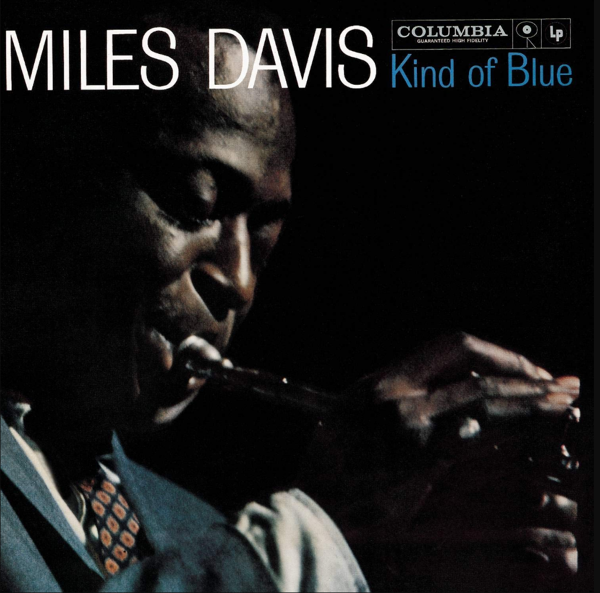

Kind of Blue
Miles Davis
Kind of Blue —en español: Una especie de tristeza o algún tipo de tristeza— es un álbum de estudio del músico estadounidense de jazz Miles Davis editado en agosto de 1959.
Miles Davis
Kind of Blue —en español: Una especie de tristeza o algún tipo de tristeza— es un álbum de estudio del músico estadounidense de jazz Miles Davis editado en agosto de 1959.